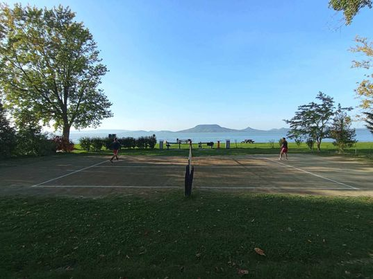
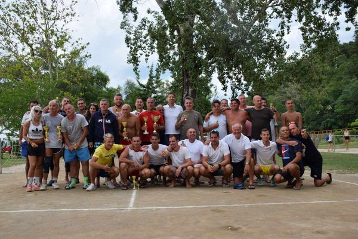
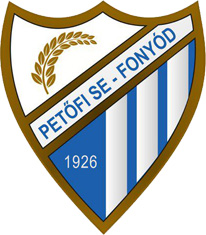
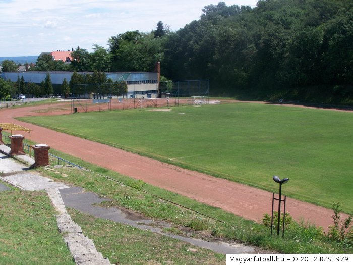
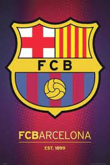
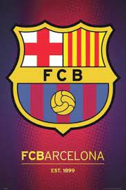

Biciklizés: amikor és ahová tehetem, biciklivel megyek.
Akkor lett számomra igazán fontos, amikor befejeztem a versenyszerű labdarúgást.
Erősítés: szintén a labdarúgás befejezése után kezdtem el, kiegészítő mozgásként.
Lábtenisz: már több, mint 15 éve, hobbiszinten űzöm.
Van egy kb. 30-40 fős informális társaság (Fonyódi Baráti Lábtenisz Kör),
mely a fonyódi Városi Strandon működik, melynek tagja vagyok.
Ez alapvetően a Balaton nyári szezonjára korlátozódik.


Labdarúgás: bár már csak ritkán játszom, mert a térdemet kétszer is operálták, fontosnak tartom
megemlíteni.
Egyrészt mert a barátaim, ismerőseim jelentős része erről a területről származik, másrészt pedig azért, mert
több,
mint 20 évig igazoltan játszottam. Majd korosztályos (ifi, serdülő, U13, U11, U9-U7) csapatoknak voltam az
edzője.
Két szezont leszámítva mindvégig Fonyódon, a Fonyódi Petőfi SE-ben.


A labdarúgást nézni is szeretem. Természetesen a magyar válogatott mérkőzéseit megnézem.
Klubszinten elsősorban az FC Barcelona meccseit követem, nagyjából 30 éve.
Illetve az erősebb európai bajnokságokat, valamint a BL-sorozatot is figyelemmel kísérem.
Barcelonában volt szerencsém egyszer élőben is megnézni egy mérkőzést és pár napot eltölteni.
Szeretnék majd újra elmenni oda, pláne most, hogy a stadiont (a Camp Nou-t) felújítják!
 
